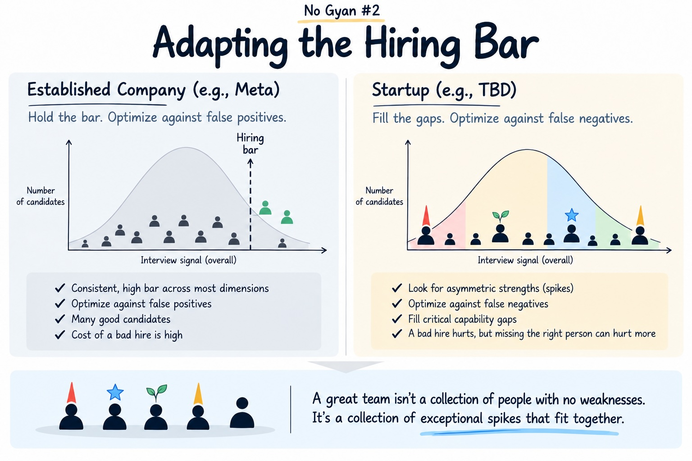
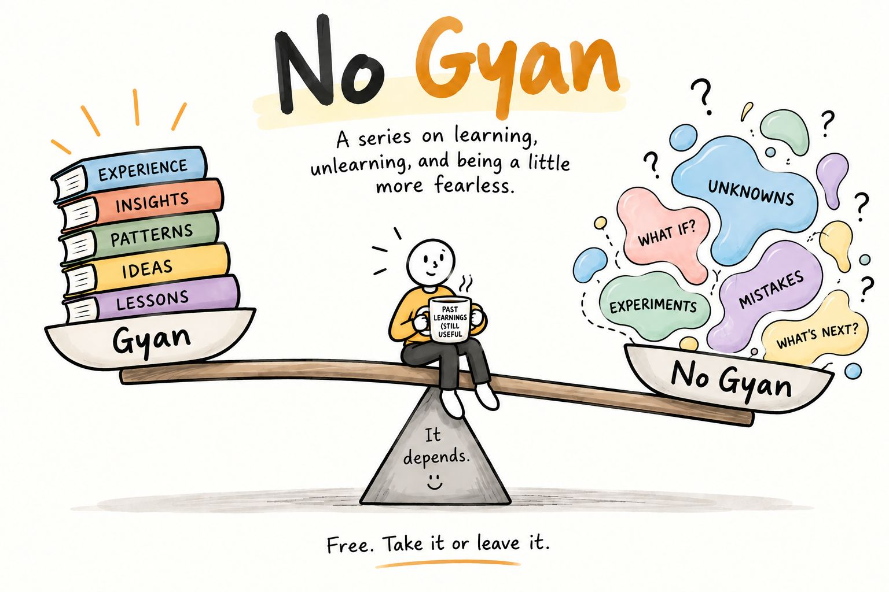

Things I’m learning, unlearning, questioning, and sometimes getting wrong.
The bar doesn’t get lower. Its shape changes.
Hiring · Startups · Teams · October 2026

Experience gives you confidence in what you know. Adventure requires you to walk toward what you don’t.
Learning · Unknowns · October 2026
